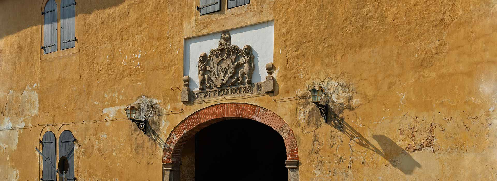

Discover the undersea secrets and seafaring past of Sri Lanka in the historic Old Dutch Warehouse.
The National Maritime Museum is located in a magnificent Dutch warehouse built in 1671. It showcases the marine biological and archaeological heritage of Sri Lanka, specifically focusing on the southern coast.
Exhibits include maps, earthenware, and artifacts found in shipwrecks off the coast of Galle. It's a fascinating journey through centuries of trade, navigation, and the diverse marine ecosystem that surrounds the island.
Back to Galle Hub